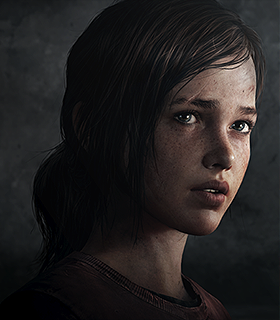

Birkaç ahlaki çizgiyle acımasız bir kurtulan kişi geçmeye gitti. Joel, 40'ların sonlarında, bildiğimiz şekliyle uygarlığı harap eden mantar pandemisinin yıkımlarıyla sertleşmiştir. Arkadaşlarını, ailesini ve hayatında değer verdiği her şeyi kaybetti. Kalan az sayıdaki askeri kontrollü karantina bölgelerinden birinde yaşamakta olup, bu yeni post-pandemik dünyada hayatta kalabilmek için yıllar boyunca çok sayıda insani olmayan iş almakta, karaborsada uğraşan bir karaborsa kaçakçısı olarak faaliyet göstermektedir. Joel'in vicdanı, yeni hayatına baş etmek için duygularını kapatırken yavaş yavaş azalır.

Ellie
Cesur, 14 yaşında bir kız, Ellie bu acımasız dünyada büyümüş ve şimdiye kadar bildiği tek şey budur. O, karantina bölgesinin sınırları içinde ordu tarafından yönetilen bir yatılı okulda yetiştirilen bir yetim. Dış dünyayı merak eden ve merak eden, yıllarının ötesinde bilge ve kendini ve etrafındakilerle ilgilenebiliyor. Çizgi romanlar, CD'ler ve diğer popüler kültürlerle takıntılı olan bilgi birikimi, artık var olmayan bir dünyanın kalıntılarıyla doludur.